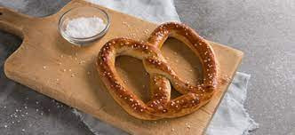

Auntie Anne Pretzles

Ingredients
Dough:
- 2 cups (500ml) water @100f
- 3 1/4 teaspoon (14g) instant yeast
- 1/3 cup (72g) brown sugar
- 1/4 cup (60ml) neutral-tasting oil
- 5.5 cups (825g) all-purpose flour
- 1 teaspoon (6g) fine sea salt
Lye Bath:
- 30g food-grade lye
- 1000g filtered water
Salted Topping
- flakey salt for topping
- melted butter for brushing
Cinnamon Sugar:
- 1 cup (225g) melted SALTED butter
- 3/4 cup (155g) granulated sugar
- 1/4 cup (55g) dark brown sugar
- 2.5 teaspoons (7g) ground cinnamon
.
Instructions:
Dough:
- eat oven to 450F
- In a large bowl, mix water (100F), yeast, begin whisking, add brown sugar, and whisk until dissolved. Cover with plastic wrap at room temperature and let it sit for about 5 minutes; then whisk in the oil.
- In a separate large bowl, whisk together flour and sea salt. Add the yeast mixture to the flour mixture, begin mixing it by hand, then knead that for five minutes or until relatively smooth (it’s okay if the dough is sticky still). Next, transfer the dough to a large greased bowl, cover it with greased plastic wrap, and let it rise at room temperature for 1.30 hours or until double the size.
- Punch down the dough to release the gas, turn the dough onto an unfloured surface. Divide the dough into 12 to 14 pieces. Roll each piece into a ball, place them on a baking sheet, let them rest for ten minutes, covered. Using both your hands, roll that ball out into a very long rod, try to get it as long as you can while applying more pressure to the ends to get pointing tips, and once it is about 13 to 14 inches long, bring the ends together, twirl them together once, and bring them back to the center of the rod to create a pretzel shape.
- Put on rubber or latex food-safe gloves. Gently dip the pretzel into the lye bath, let it soak for a few seconds, and carefully transfer it onto a Silpat (silicone mat) lined baking sheet. Generously sprinkle flaky salt. Bake for 10 to 15 minutes, brush some melted unsalted butter and let it rest until warm.
Lye Bath:
- In a large metal or glass bowl, make the lye bath: add the water to the bowl, and whisk in the lye until dissolved. (Use rubber or latex food-safe gloves and be careful not to splash any lye on yourself)
- Reserve in a safe place.
Salted Topping
-
Brush the pretzel with melted butter and serve
Cinnamon Sugar
- In a bowl, whisk sugar, brown sugar, and ground cinnamon. In a large saute pan, melt salted butter, dip your pretzel entirely in the butter (fully coated), and quickly toss in a bowl of your cinnamon sugar until completely coated.
Recipe Courtesy of Joshue Weissman